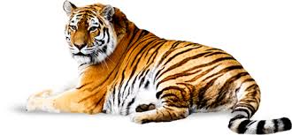

Tiger

The tiger is the largest cat species, most recognisable for their pattern
of dark vertical stripes on reddish-orange fur with a lighter underside.
The species is classified in the genus Panthera with
the lion, leopard, jaguar and snow leopard. Tigers are apex predators,
primarily preying on ungulates such as deer and bovids. They are
territorial and generally solitary but social animals, often requiring
large contiguous areas of habitat that support their prey requirements.
This, coupled with the fact that they are indigenous to some of the more
densely populated places on Earth, has caused significant conflicts with
humans.
To read more about tigers visit here
Polar Bears

The polar bear (Ursus maritimus) is a carnivorous bear whose native
range lies largely within the Arctic Circle, encompassing the Arctic
Ocean, its surrounding seas and surrounding land masses. It is a large
bear, approximately the same size as the omnivorous Kodiak bear
(Ursus arctos middendorffi).[3] A boar (adult male) weighs around
350–700 kg (772–1,543 lb),[4] while a sow (adult female) is about half
that size. Although it is the sister species of the brown bear,[5] it
has evolved to occupy a narrower ecological niche, with many body
characteristics adapted for cold temperatures, for moving across snow,
ice and open water, and for hunting seals, which make up most of its
diet.
To read more about tigers visit here
Lions

The lion (Panthera leo) is one of the big cats in the genus Panthera
and a member of the family Felidae. The commonly used term African
lion collectively denotes the several subspecies in Africa. With some
males exceeding 250 kg (550 lb) in weight,[4] it is the second-largest
living cat after the tiger. Wild lions currently exist in sub-Saharan
Africa and in India (where an endangered remnant population resides in
Gir Forest National Park)
to read more about tigers visit here